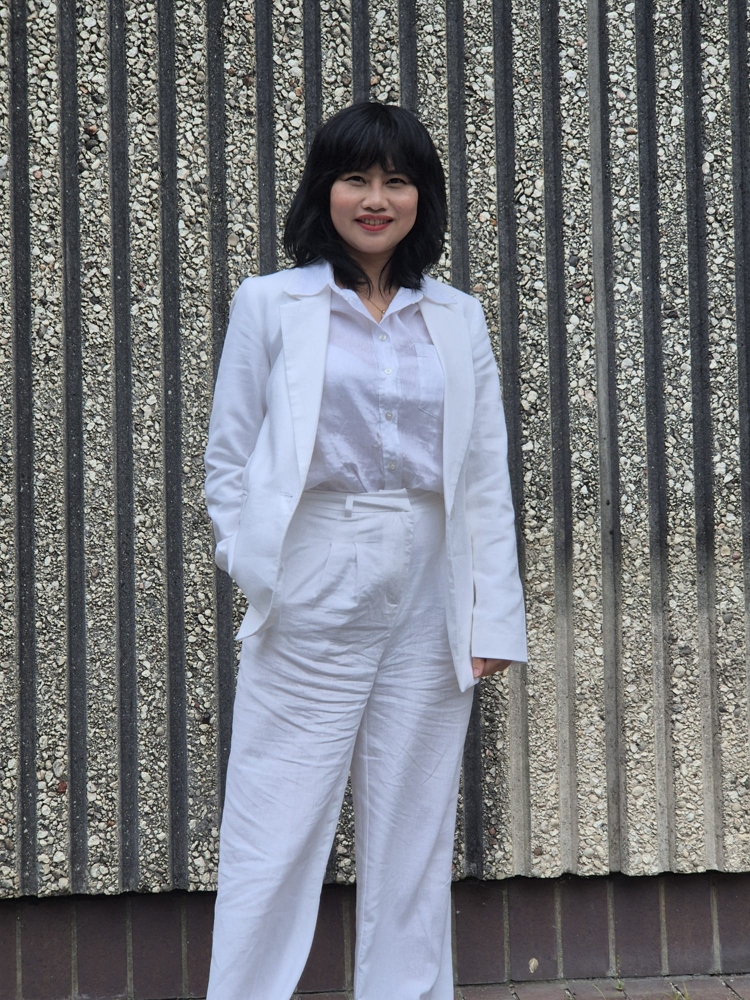
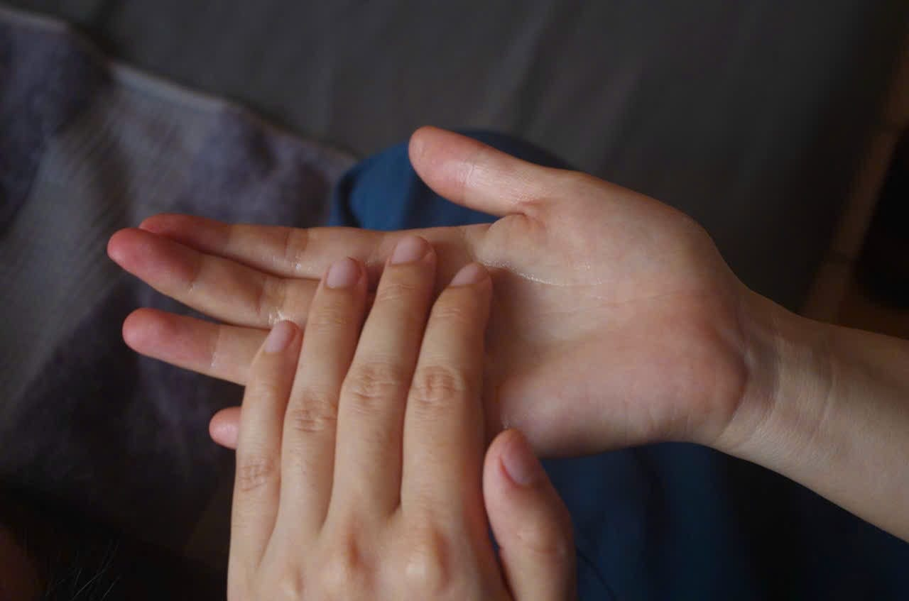
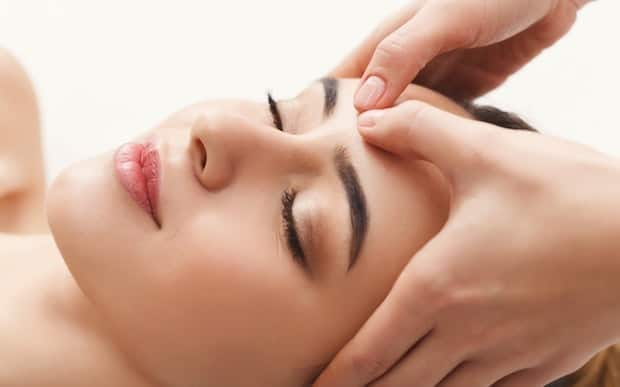

Authentic Vietnamese Massage & Holistic Therapies in Swansea
Book NowBooking
Click Here to BookHow It Works
- Fill out the short booking form.
- We'll confirm your appointment by phone or email.
- Arrive 5–10 minutes early to relax before your session.
What You Need to Know
- Payment: Cash or bank transfer accepted.
- Cancellation: Please notify at least 24 hours in advance.
- Note: Strictly professional massage therapy only.
Ready to Book?
Click the button below to fill out our secure form. We'll contact you shortly to confirm your session.
Book NowStill Have Questions?
Feel free to call us or email kim@vnhands.co.uk.
What Is "Help Self Healing"?
When God created all living things, He gave each one an inner strength, a natural ability to heal
itself. In the past, people lived closer to nature.
But today, our world is filled with pollution—air, noise, water—and much of what we consume is
altered by human hands. As a result, many people rely heavily on medicine, which weakens the body's
natural defenses. While modern treatments may
bring quick relief, they often come with hidden long-term consequences.
At VNHands, we follow traditional healing methods passed down by our ancestors to support the body's
natural recovery from within. "Help Self-Healing"
is not just about physical wellness—it's about restoring your inner strength and embracing a more
vibrant life. As the saying goes, “What is different
is beautiful”—a truth that will always remain.

I'm Thi Kim Ngan Tran, a qualified massage therapist with over 8 years’ experience in therapeutic
massage,
including deep tissue, relaxation, reflexology, and traditional Eastern techniques. Now practicing
at a
trusted Chinese medicine clinic in Swansea, I combine my skills with a passion for natural healing
to
support your body's health and well-being.
Drawing on both Western massage and Eastern wellness traditions, I offer personalised treatments
designed
to relieve pain, reduce stress, and restore balance. My approach is gentle yet effective, and
tailored to
your unique needs, whether you’re managing tension, recovering from injury, or simply seeking
relaxation.
I also bring knowledge of traditional therapies like moxibustion, or heat therapy, which I use
as part of my holistic approach to promote circulation and relaxation. While I continue to
pursue professional licensing to offer acupuncture, my treatments focus on safe, natural healing
methods to help you feel your best.
If you’re looking for compassionate, professional care in a supportive environment, I would love
to
welcome you to VN Hands.
In addition to formal qualifications and continuous professtional
development, I'm currently volunteering as a massage therapist at
Swansea Care Centre. This experience allows me to support the people in the
community while further developing my skill and demonstrating a strong
commitment to care and service.
Our services
£35 for 30 Minutes
£55 for 60 Minutes
£65 for 75 Minutes

KIM’s massage:A unique therapeutic blend of deep tissue, acupressure and tailored stretching .

THE FLOW: A deeply relaxing full-body massage to release tension and calm the mind.

BACK & SHOULDER: Relieves deep tension and soothes muscle tightness in upper body.

ADD-ON OPTIONS: Head massage, Hand massage, Pelvic & legs treatment....
To arrange a booking please contact us by phone (07404793531) or e-mail:kim@vnhands.co.uk